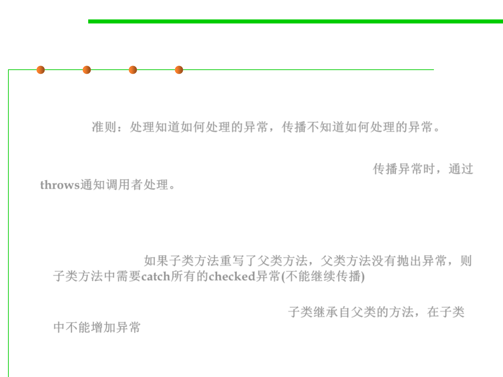

7.2 Error and Exception Handling
Try/catch and throw an exception?
▪ As a general rule, you should catch those exceptions that you know
how to handle and propagate those that you do not know how to
handle. 准则：处理知道如何处理的异常，传播不知道如何处理的异常。
▪ When you propagate an exception, you must add a throws specifier
to alert the caller that an exception may be thrown. 传播异常时，通过
throws通知调用者处理。
▪ Notice:
– If you are writing a method that overrides a superclass method which
throws no exceptions, then you must catch each checked exception in the
method’s code. 如果子类方法重写了父类方法，父类方法没有抛出异常，则
子类方法中需要catch所有的checked异常(不能继续传播)
– You are not allowed to add more throws specifiers to a subclass method
that are present in the superclass method. 子类继承自父类的方法，在子类
中不能增加异常